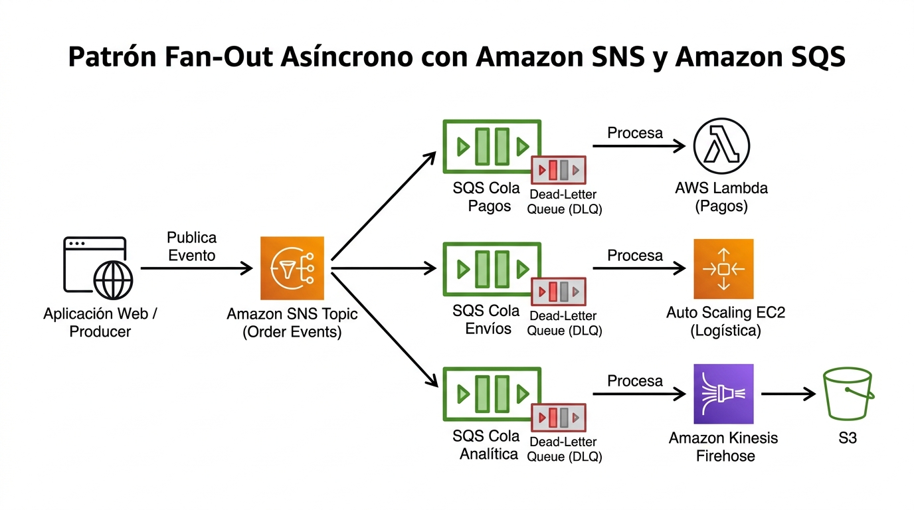

SQS y SNS Amazon Simple Queue Service · Amazon Simple Notification Service
El patrón número uno del examen de integración: decoupling — desacoplar productores de consumidores con colas y topics.
Imagina una oficina con una bandeja de tareas compartida: cualquier compañero puede dejar un encargo, y los trabajadores van tomando los papelitos a su propio ritmo. Nadie necesita saber quién dejó el encargo ni cuándo se resolverá; si un trabajador se ausenta, los encargos simplemente esperan. Amazon SQS es esa bandeja: una cola gestionada, segura, durable y disponible que, según la documentación oficial, sirve para integrar y desacoplar sistemas y componentes distribuidos. Los producers dejan mensajes; los consumers los retiran cuando pueden.
Amazon SNS resuelve el problema opuesto pero complementario: no quieres que el mensaje espere a un solo trabajador, sino anunciarlo a muchos a la vez. Es el megáfono de la organización: publicas una sola vez en un topic y el servicio lo entrega a todos los suscriptores (colas SQS, funciones Lambda, endpoints HTTP/S, email, SMS, push móvil e incluso Amazon Data Firehose). El examen SAA-C03 no pregunta pantallas de la consola: pregunta cuándo tu arquitectura se beneficia de buffer y decoupling (SQS) frente a fan-out y notificación (SNS) — y muy a menudo, la respuesta correcta combina ambos.
frontend"] B["Microservicio
de pedidos"] end Q["SQS Queue
buffer durable"] subgraph CONS["Consumers - pull"] C1["Worker 1"] C2["Worker 2"] C3["Worker N
Auto Scaling"] end A --> Q B --> Q Q --> C1 Q --> C2 Q --> C3 classDef navy fill:#EFF6FF,stroke:#3B82F6,stroke-width:2px,color:#1E293B classDef green fill:#F0FDF4,stroke:#10B981,stroke-width:2px,color:#1E293B classDef amber fill:#FFF7ED,stroke:#F59E0B,stroke-width:2px,color:#1E293B class A,B navy class Q amber class C1,C2,C3 green
Decoupling: por qué este patrón domina el examen
En una arquitectura acoplada, si el componente de pagos cae, el frontend que registra pedidos también cae: la petición síncrona falla y el pedido se pierde. Introduce una cola entre ambos y el fallo se aísla: el producer sigue aceptando pedidos y encolándolos (el usuario percibe servicio normal), mientras el consumer caído se recupera y drena el backlog. Ese aislamiento de fallos es exactamente lo que el dominio "Design Resilient Architectures" evalúa: la cola actúa como buffer que absorbe picos de tráfico y como punto de corte cuando un componente no está disponible.
El segundo beneficio es el escalado independiente: los workers detrás de la cola pueden crecer con un Auto Scaling group midiendo la profundidad de la cola, mientras el producer permanece inmutable. La documentación oficial subraya que SQS escala de forma transparente para manejar picos sin instrucciones de aprovisionamiento, que replica los mensajes en múltiples servidores para durabilidad y que permite múltiples producers y múltiples consumers concurrentes. Para el examen, memoriza la frase ganadora: la cola nivela la carga y permite a cada capa escalar por separado.
Colas standard vs FIFO: orden, entrega y throughput
SQS ofrece dos sabores de cola y el examen te obliga a distinguirlos con precisión. Las standard queues maximizan throughput y disponibilidad: la entrega es at-least-once (un mensaje puede entregarse más de una vez) y el orden no está garantizado, aunque en la práctica suele respetarse. Las FIFO queues garantizan el orden y el procesamiento exactly-once — la documentación oficial habla de "exactly-once processing" y de un modo de high throughput para FIFO — a cambio de un throughput limitado respecto a standard. El orden en FIFO se organiza por message groups: los mensajes del mismo grupo se procesan en orden estricto; grupos distintos pueden avanzar en paralelo.
| Característica | Standard queue | FIFO queue |
|---|---|---|
| Orden de mensajes | No garantizado (best effort) | Garantizado dentro de cada message group |
| Entrega | at-least-once — pueden llegar duplicados | exactly-once processing — sin duplicados |
| Throughput | Prácticamente ilimitado (escala transparente a decenas de miles de msg/s) | 300 msg/s (sin batching) · hasta 3.000 msg/s con batching · modo high-throughput FIFO hasta 70.000 msg/s |
| Caso típico | Decoupling, buffering de picos, nivelado de carga | Transacciones bancarias, replicación de datos, cualquier flujo donde el orden sea ley |
El ciclo de vida de un mensaje: visibility timeout, DLQ y long polling
Estos tres mecanismos convierten a SQS en una cola de producción y aparecen una y otra vez en las preguntas. El visibility timeout es el corazón: cuando un consumer recibe un mensaje, SQS lo oculta del resto de consumers mientras dura el procesamiento. Si el consumer lo procesa bien, borra el mensaje (DeleteMessage) y desaparece. Si el consumer muere a mitad de tarea, el timeout expira, el mensaje vuelve a estar visible y otro worker lo reintenta. Configurarlo mal es un clásico: demasiado corto y un proceso lento provoca procesamiento duplicado; demasiado largo y un fallo real retrasa el reintento.
el mensaje"] --> P["Procesando
mensaje invisible"] P -->|"exito"| D["DeleteMessage
mensaje fuera"] P -->|"expira el
visibility timeout"| V["Mensaje visible
de nuevo"] V -->|"reintentos sobre
maxReceiveCount"| DLQ["Dead-Letter Queue
para análisis"] classDef navy fill:#EFF6FF,stroke:#3B82F6,stroke-width:2px,color:#1E293B classDef green fill:#F0FDF4,stroke:#10B981,stroke-width:2px,color:#1E293B classDef amber fill:#FFF7ED,stroke:#F59E0B,stroke-width:2px,color:#1E293B class R,P green class D navy class V amber class DLQ amber
El reintento infinito sería un problema: un mensaje corrupto — un poison message — bloquearía workers para siempre. La solución oficial es la dead-letter queue (DLQ): SQS mueve allí el mensaje cuando supera el maxReceiveCount de la política de redrive. El flujo productivo sigue funcionando y un humano (o una Lambda de diagnóstico) examina la DLQ. Por último, el long polling: en lugar de devolver "cola vacía" al instante, la llamada ReceiveMessage espera un tiempo configurable a que lleguen mensajes, lo que reduce llamadas vacías, baja el costo y reparte el trabajo de forma más pareja entre consumers. Es la respuesta estándar cuando el enunciado se queja de costos de polling o de respuestas vacías.
Un detalle operativo que también cae en preguntas: los mensajes de SQS tienen un tamaño máximo en el orden del megabyte (1 MiB); para payloads mayores, la práctica oficial es guardar el cuerpo en S3 o DynamoDB y dejar en la cola solo un puntero al objeto.
SNS: pub/sub, fan-out y el patrón SNS + SQS
SNS invierte el modelo: en lugar de que el consumidor tire de la cola, el topic empuja el mensaje hacia los suscriptores. La documentación lo define como servicio gestionado de entrega de mensajes de publishers a subscribers, con el topic como canal lógico de comunicación. Soporta mensajería A2A (aplicación a aplicación: SQS, Lambda, Firehose, endpoints HTTP/S) y A2P (aplicación a persona: email, SMS, push móvil). Un mensaje publicado llega a todos los suscriptores — cada uno recibe su copia.

El patrón estrella — fan-out — combina ambos servicios: el producer publica en el topic; el topic entrega copias a varias colas SQS; cada cola alimenta a su equipo o microservicio con su propio ritmo, reintentos y DLQ. La documentación oficial lo describe como fórmula para "fanning out" a colas de forma asíncrona. Ganas lo mejor de los dos mundos: la difusión uno-a-muchos de SNS y la durabilidad, el buffer y el procesamiento pull de SQS. Además, los suscriptores de cola pueden filtrarse con subscription filter policies (solo reciben los mensajes que cumplen un atributo), y si el suscriptor HTTP falla, SNS aplica su política de reintentos antes de mandar el mensaje a una DLQ de suscripción.
| Dimensión | Amazon SQS | Amazon SNS |
|---|---|---|
| Modelo | Cola — los consumers hacen pull | Pub/sub — el topic hace push a suscriptores |
| Destino de un mensaje | Un solo consumer lo procesa | Todos los suscriptores reciben una copia |
| Retención del mensaje | Guardado en la cola hasta ser procesado y borrado | Entrega inmediata; si falla, reintentos según política |
| Endpoints | Consumers que llaman a la API | SQS, Lambda, HTTP/S, email, SMS, push móvil, Data Firehose, proveedores |
| Patrón de examen | Buffer, nivelado de carga, trabajo asíncrono | Fan-out, notificación uno-a-muchos, A2P |
Amazon MQ: cuando ya tienes un broker
Falta la tercera pieza del puzle de mensajería. Amazon MQ es un servicio gestionado de message brokers para Apache ActiveMQ Classic y RabbitMQ: AWS opera el broker (setup, mantenimiento y upgrades) y tú conectas tus aplicaciones. El caso de uso es muy específico y muy fácil de detectar en el enunciado: migrar brokers existentes a AWS sin reescribir el código de mensajería, porque las aplicaciones siguen usando protocolos estándar de mensajería (JMS, AMQP, MQTT vía el broker). Ofrece cifrado en tránsito y en reposo, endpoints privados en tu VPC, monitoreo con CloudWatch y — para RabbitMQ — colas replicadas entre AZs que siguen sirviendo si se cae un nodo.
Cómo cae en el examen: señales y respuestas
| Si el enunciado dice… | La respuesta apunta a… |
|---|---|
| "application components must communicate without coupling / handle spikes" | SQS standard queue entre los componentes (decoupling + buffer) |
| "messages must be processed exactly once in order" | SQS FIFO con message groups |
| "a failed message is blocking workers / analyze failed messages" | Dead-letter queue + política de redrive |
| "empty receives / reduce polling cost" | Habilitar long polling en ReceiveMessage |
| "notify multiple systems / one event to many consumers" | SNS topic, o SNS + SQS fan-out |
| "migrate existing ActiveMQ / RabbitMQ broker" | Amazon MQ |
| "decouple microservices with minimum operational overhead" | SQS/SNS serverless — distractor típico: EC2 con Kafka o brokers propios |
- Decoupling es la palabra mágica: SQS aísla fallos, absorbe picos y desacopla escalado.
- Standard = at-least-once sin orden y alto throughput; FIFO = orden por message group y exactly-once processing.
- Visibility timeout oculta el mensaje mientras se procesa; si expira, vuelve a estar visible (diseña consumers idempotentes).
- DLQ atrapa poison messages tras superar
maxReceiveCount— asíncrono y sin bloquear la cola principal. - Long polling elimina respuestas vacías y reduce costo de
ReceiveMessage. - SNS = fan-out push a muchos suscriptores (SQS, Lambda, HTTP/S, email, SMS, push, Firehose); el patrón compuesto es SNS → SQS ×N.
- Payloads mayores a ~1 MiB van a S3/DynamoDB y la cola lleva el puntero.
- Amazon MQ es la respuesta para migrar brokers ActiveMQ/RabbitMQ existentes sin reescribir código.
- INT-01 Amazon SQS — Developer Guide (Welcome, queues, visibility timeout) · docs.aws.amazon.com/AWSSimpleQueueService/latest/SQSDeveloperGuide/welcome.html
- INT-02 Amazon SQS — FIFO queues (ordering, exactly-once, high throughput) · docs.aws.amazon.com/AWSSimpleQueueService/latest/SQSDeveloperGuide/FIFO-queues.html
- INT-03 Amazon SNS — Developer Guide (Welcome, pub/sub, topics) · docs.aws.amazon.com/sns/latest/dg/welcome.html
- INT-07 Amazon MQ — Welcome (managed ActiveMQ/RabbitMQ) · docs.aws.amazon.com/amazon-mq/latest/developer-guide/welcome.html